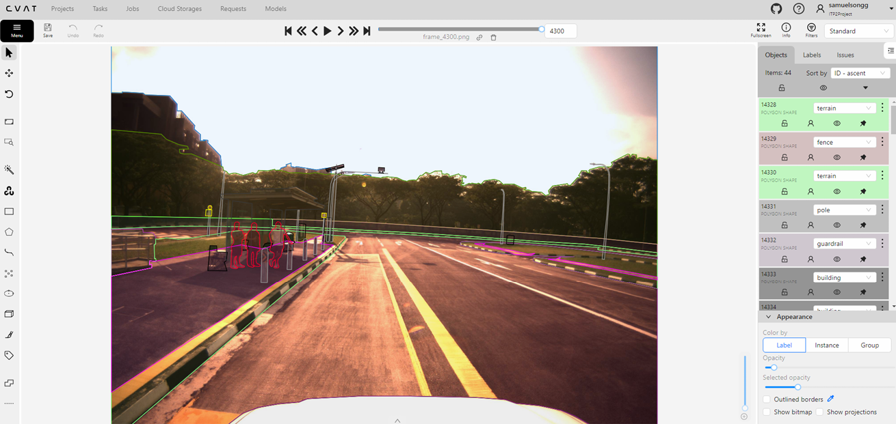
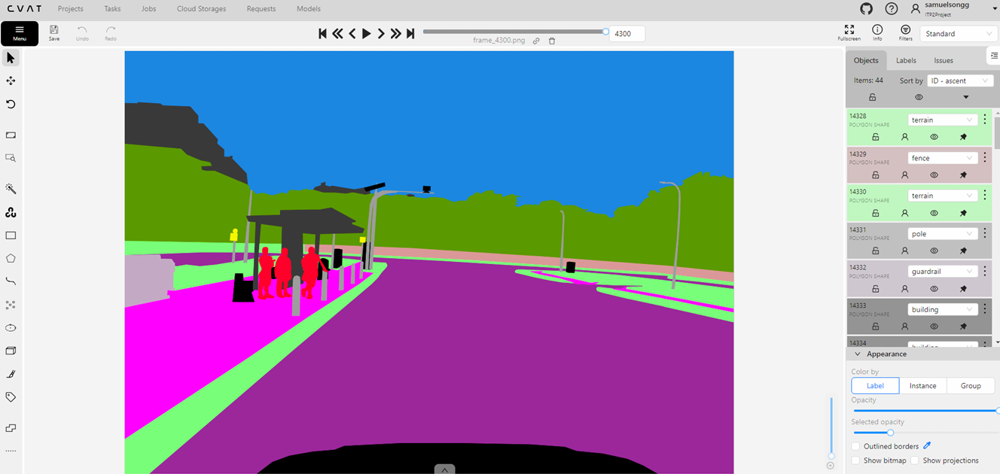
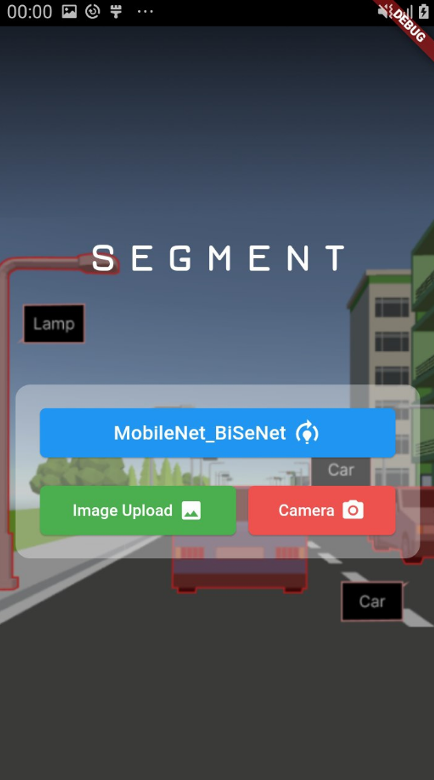
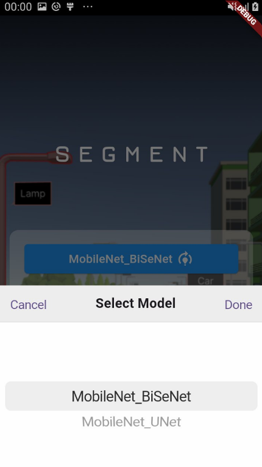
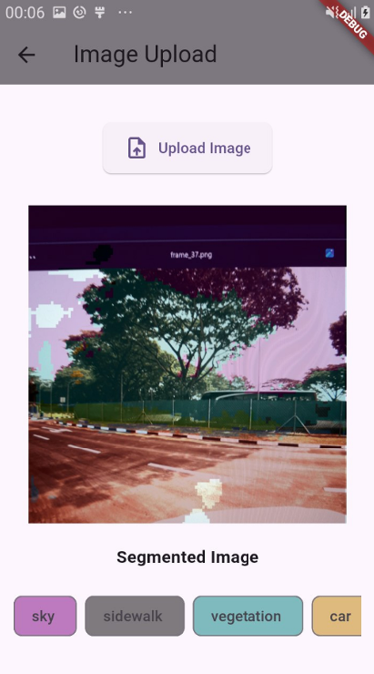
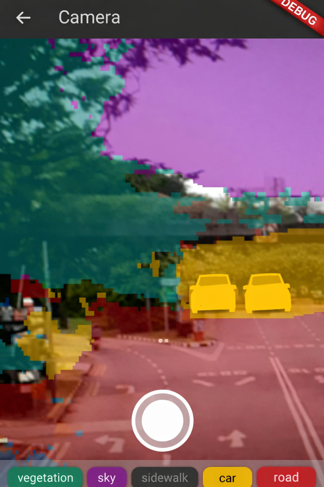
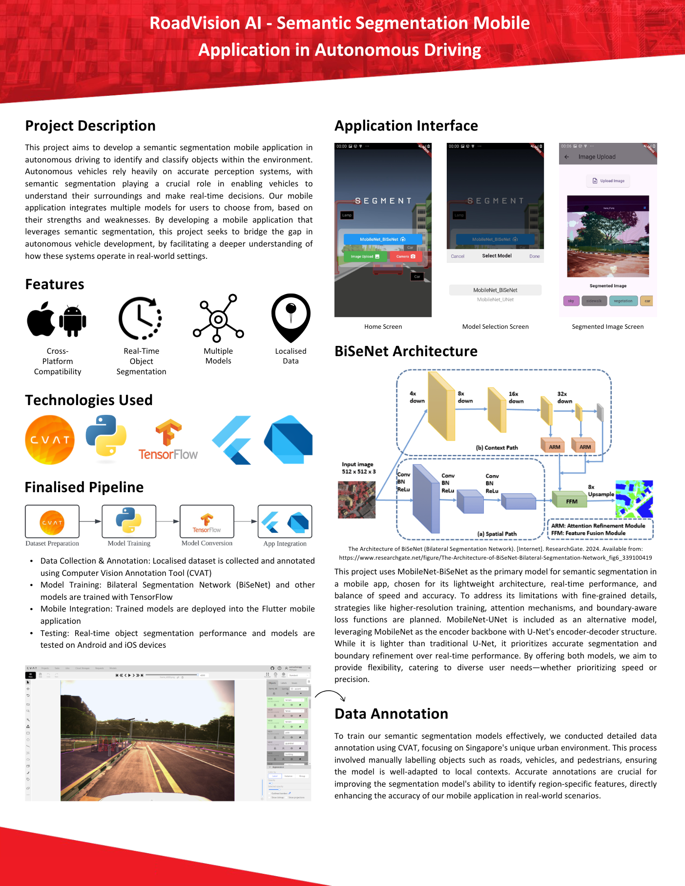

RoadVision AI is a cross-platform mobile application that performs real-time semantic segmentation to detect and classify environmental objects such as roads, vehicles, and pedestrians. By processing both live camera feeds and uploaded images, the app demonstrates how computer vision perception systems interpret real-world environments.
The project features a localized dataset tailored to Singapore's unique urban landscape and allows users to toggle between different lightweight AI models, balancing the need for real-time processing speed against high-precision boundary refinement.
Mobile Development: Flutter, Dart
Deep Learning: TensorFlow
Computer Vision: CVAT (annotation tool)
Models: MobileNet-BiSeNet, MobileNet-UNet
Model Training: Python
RoadVision AI Pipeline Overview
RoadVision AI Annotation Samples


RoadVision AI Interfaces


RoadVision AI Image Upload Function

RoadVision AI Live Camera Function

RoadVision AI Poster Summary
